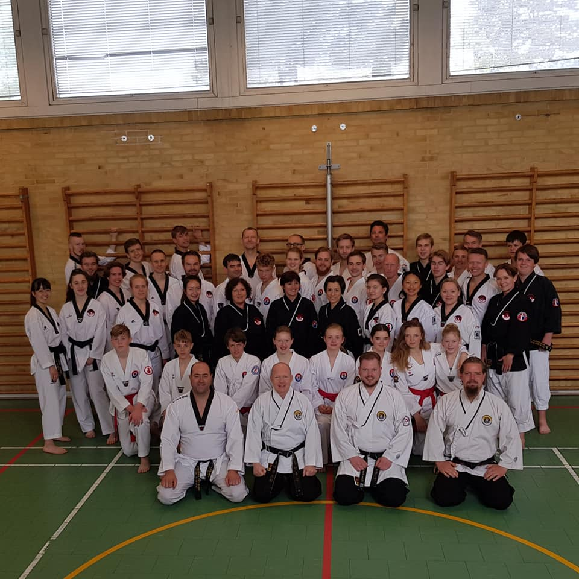
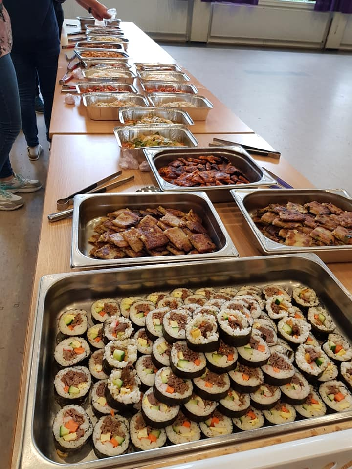

Innlegg
Danseminar Islev
Sju medlemmer fra Ringerike TKD bestemte seg for å dra til danseminaret i Islev fra 31.mai til 2.juni. Der kunne alle fra rødt belte og oppover bli med. Utenlandske medlemmer skulle ankomme dagen før de danske, derfor ankom medlemmer fra Ringerike TKD og andre klubber fra over hele Norge med bil, buss og fly.
Danseminaret ble holdt i Islev sine treningslokaler, som ligger i underetasjon på Islev skole. Der var det flere treningshaller, derfor ble rød- og svartbeltene noen ganger delt. Det var tre treninger om dagen, der hver trening varte i cirka en time.

Dagene startet med frokost som besto av brød, juice og pålegg. I tillegg var det også en god lunsj med brød, pålegg, drikke og grønnsaker. Etter frokosten og etter lunsjen var det trening. Hver trening hadde hvert sitt tema. Temaene var TTU poomse, WT poomse og avtalt kamp (hanbon kyorugi, sambon kyorugi og kombinasjonsteknikker). Så man fikk gått gjennom mye pensum. Treningene ble holdt av master Allan og master Erlingur. I tillegg var det en mulighet for 1. kup og dan for å ta styrketest og teoriprøve. Den siste treningen ble holdt av master Michael Iversen, der det ble undervist i selvforsvar. På lørdag ble alle som hadde lyst invitert til en koselig aften med koreansk middag. Prisen var 150,- kroner, inkludert middag og dessert. Der fikk man smakt på mange ulike, koreanske signaturretter. Det var et godt samhold, og man ble kjent med mange.
Søndagens program var likt som lørdagens, og danseminaret ble avsluttet på formiddagen. For å avslutte var dette et veldig gøyalt og lærerikt seminar. Spesielt fordi det ble holdt i Danmark, som gjorde at man også fikk inspirasjon til nye treningsteknikker å prøve ut til for eksempel oppvarming og uttøyning. Det var mange der, der noen var fra Norge og flesteparten var fra Danmark. Totalt var det cirka 40 stykker med. Man blir kjent med mange mennesker siden man trener med mange nye mennesker, både fra Danmark og fra Norge. Jeg anbefaler alle som kan og vil til å bli med neste gang, for dette var veldig gøy!